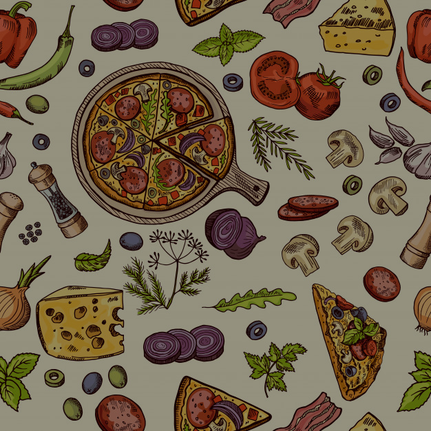

Alcachofras à Romana
Seu preparo é mais comum durante a primavera, época de maior produtividade das alcachofras.
Teve origem na cidade de Roma, na Itália, e seu preparo consiste na lavagem e cozimento das flores, onde recebem posteriormente temperos e especiarias, como a mentuccia (erva típica de Roma), alho, azeite, limão siciliano, tomilho, sálvia e etc